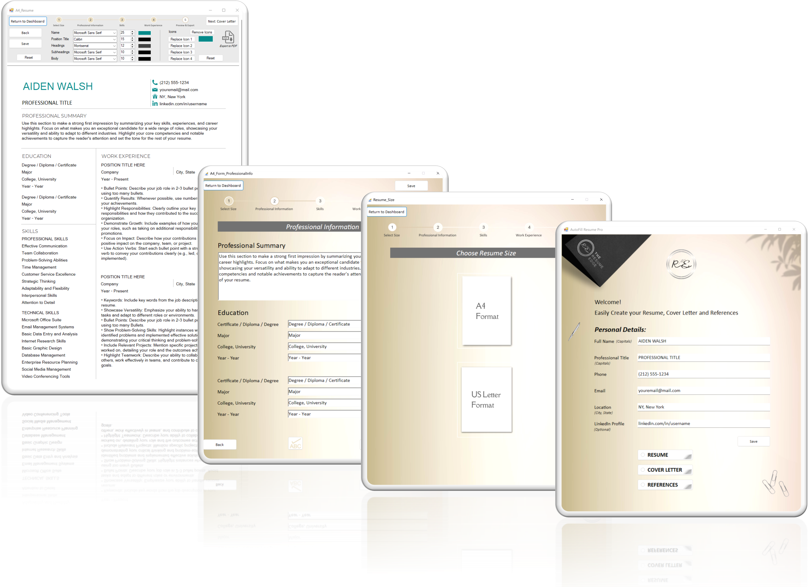

AutoFill Resume Pro
Problem → Process → Solution→ Outcome
Case Study 1: AutoFill Resume Pro
Case Study Structure (Overview)
- Project Overview — What the project is and why it matters
- Problem — The pain points faced by users
- Market Research & Insights — Competitor scan, user research, and opportunities
- How Might We + Target User — Defining the design challenge and audience
- Goal — What success looks like
- Tools & Technologies — The stack used
- Process — Step-by-step build approach
- Challenges & Learnings — Obstacles and solutions
- Planning — User flows, diagrams, and structure
- Visuals & Screenshots — Mockups, installer branding, generated outputs
- Outcome — Final deliverable and release state
- Impact & Reflection — What I've learned and next steps
Project Overview
AutoFill Resume Pro is a C# WinForms desktop application that generates professional resumes in A4 and US Letter formats. It streamlines resume building with customizable colors, icons, fonts, and autosave. The project began as a VBA prototype and grew into a full branded desktop application with installer, GitHub repository, and tutorial videos.
The Problem
- Jobseekers struggle with resume formatting and consistency.
- Many templates break across A4/US Letter; icons/colors often don't transfer well.
- Non-technical users need a tool that's simple, professional, and flexible.
Market Research & User Insights
- Competitor Scan — Reviewed how existing resume sellers structure products.
- Keyword Research (Google + E-Rank) — Identified strong search demand; niche proven by profitable sellers under 16 months old.
- User Feedback Review — Analysed reviews + community forums.
Key Research Insights:
- Resume templates often break across formats (A4 vs. US Letter), misaligning margins/icons.
- Many users lack access to or struggle editing in MS Word/Google Docs.
- Demand is high for both A4 (NZ/AU/Europe) and US Letter (US/Canada) versions.
Opportunity Insights:
A clear gap existed for a desktop application that generates resumes, cover letters, and references seamlessly — no reliance on Word/Docs or advanced formatting knowledge.


Goal
- Create an app that automatically generates resumes in multiple formats.
- Ensure ease of use (one click = formatted resume).
- Include branding & customization (color pickers, icons, fonts).
- Deliver a professional product for portfolio/demo release.
Tools & Technologies
- Excel VBA Prototype — Early chatbot + resume generator logic.
- C# WinForms (Visual Studio 2022/2025) — Desktop app development.
- Inno Setup — Branded installer with custom icons and copyright messaging.
- GitHub — Version control + public portfolio repository.
- Filmora 13 — Screen recording, editing, AI voiceover for tutorials.
- Canva — App/installer icons + marketing mockups.
Process
- Prototype(Excel VBA) — Built chatbot + resume generator logic.
- User Flow Mapping — Designed step-by-step flow (input → preview → export).
- Development in C# — Created A4 + US Letter forms with custom icons, fonts, autosave.
- Testing — Verified release mode stability (labels/icons load correctly, color persistence).
- Branding & Installer — Designed branded app/installer icons, added installer copyright message.
- Tutorial Creation — Recorded YouTube video walkthrough with AI voiceover.
Challenges & Learnings
- Debugging issue: A4 labels/icons wouldn't load in Release mode → fixed for stability.
- Ensured color persistence across forms with fallback logic.
- Trial+ error handling of installer branding + .ico sizes.
- Balanced technical detail vs. usability: simple UI + flexible customization.
Planning / User flows

Visuals / Mockups / Screenshots
These visuals demonstrate how AutoFill Resume Pro delivers on its core goals: ease of use, customization, and professional branding.
